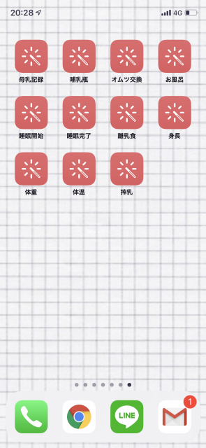

どのショートカットも設定の流れは同じです。
設定 > ショートカット の「共有セキュリティ」で「信頼されていないショートカットを許可」をオン(緑)にします。
※ この項目が表示されない iOS ではこの手順は不要です。そのまま次へ進んでください。
各項目のページにある「ショートカットを入手」ボタンからショートカットを入手します。
入手後は「ショートカット」アプリの一覧に追加されます。
最初にショートカットを実行すると「時間記録へのアクセスを求めています」と表示されるので「OK」をタップします。
ショートカットはアイコンにしてホーム画面に並べることができます。１画面にまとめておくと便利です。
やり方は「iPhone ショートカット アイコン 作成」などで調べてみてください。

ショートカットは編集できます。「ショートカット 編集」などで検索してやり方を調べ、自分用にカスタマイズしてみてください。
もし失敗して戻せなくなっても、各ページからショートカットを取り直せば大丈夫です。